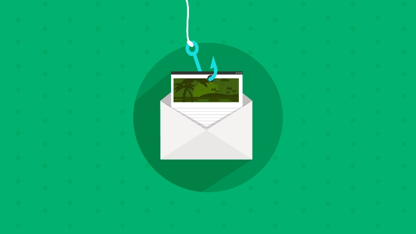
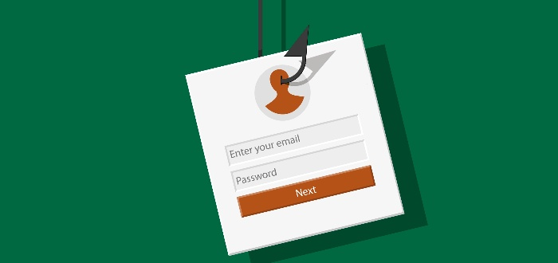

Hackers use phishing attacks to gain access to your personal information. They use emails and websites to trick you into giving your personal information. The emails usually look like they come from a trusted source, such as your bank, and they’re designed to catch you off guard. To protect yourself, don’t click on links or download attachments in unexpected emails. If you’re unsure if an email is legitimate, or you’re unsure about downloading an attachment, contact the company or organization directly.
The 10 responsible practices to avoid email phishing are categorized in the first four and by way of example, the last two are connected with fortifying your hardware and software protection.
Never click hyperlinks that are included in the contents of emails. This is particularly mandatory if the link is sent out by an unknown sender. If the recipient wants to check out the web site the email address is invalid supposedly linked with, that individual should manually type the address in the web browser.

Pop-up windows are employed by phishing perpetrators. An important next step is to never enter personal information into a pop-up ad. In general, it is best to avoid all pop-ups, except those you have complete confidence in.
Whenever someone transmits confidential information online, they must ensure the web address, or URL, begins with HTTPS, and not just HTTP. The S at the beginning of the URL indicates that a safe, encrypted connection has been established.
It's important to stay abreast of the related strategies and technologies used in phishing attempts in order to remain protected. A fantastic range of educational resources are available online to assist with avoiding phishing scams and our courses are included among them.
Maintaining antivirus protection is certainly a relatively commonsense step to take, yet many fail to do so. Bear in-mind, however, that new forms of attacks are being devised all the time, so it is prudent to maintain your antivirus protection up to date as much as possible to level the playing field.
Numerous ways exist to use software to thwart would-be email phishers. One plus of the software is the natural blocking of a significant quantity of unsolicited messages that would otherwise arrive in an inbox.
Anti-spy software should be used as an alternative part of a well-run system for preventing phishing attacks. Such software can minimize but cannot completely eliminate spyware on a computer. As spyware is cut out, the risk of a phishing attack diminishes.
Among the 10 best-practice guidelines concerning phishing is to use and maintain a reliable firewall. A firewall protects against the intrusion of malicious code into a computer, which takes on another kind of phishing attack.

DNS pharming is a recently developed sort of phishing attack that does not involve email or pop-up windows. Instead, your local DNS server is said to be poisoned. The main outcome of this poisoning is that a person's attempt to visit an actual site gets improperly redirected and suspended. For example, an individual might want to look in his or her own bank domain, but may end up at a spoofed one through a domain name hijacking attack. Competitors are helpless to prevent this type of attack until an administrator blocks security methods from locking down a DNS server.
A plan created to defend against phishing assaults is the development of backup copies. By creating these copies, the user can retreat to an uncorrupted system in the event that a phishing attack has been suspected.
In conclusion, you can avoid phishing by recognizing common phishing tactics. For example, phishing emails will often contain grammatical errors. Phishing emails can also contain links that appear to be legitimate, but will actually take you to a fake website. If you receive an email that you believe to be suspicious, do a double